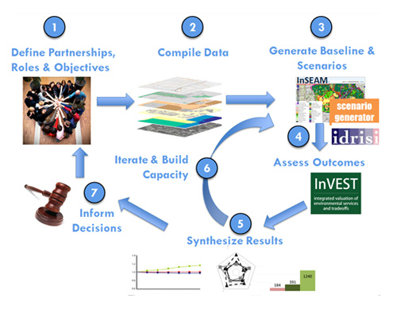

Additional Resources
NatCap Brochure

Learn more about NatCap download the brochure
InVEST Brochure

Learn more about InVEST download the brochure
Marine InVEST Brochure

Learn more about Marine InVEST download the brochure
InVEST for Business

Learn more about how InVEST can help with business decisions download the brochure
RIOS Brochure

Learn more about RIOS download the brochure
FAQs

Over the years we have been asked a number of questions about us, our software, and our work. Here we have gathered some of the questions we are most frequently asked:
Questions about Ecosystem Services:
What are ecosystem services (or environmental services)?
When should I use an ecosystem services approach to conservation?
Is there a conflict between biodiversity and ecosystem service approaches to conservation?
Are you putting a price-tag on nature?
Questions about NatCap:
What is the Natural Capital Project (NatCap)?
What is the NatCap Approach to incorporating ecosystem services into a particular decision-context?
Do you accept graduate students?
How do I make a donation to the Natural Capital Project?
How does your partnership work?
How can I collaborate with the Natural Capital Project?
How do I find out the latest NatCap is working on?
Questions about Our Software:
I'm having trouble running InVEST, can you help?
Do I need to have my own data to use InVEST?
What ecosystem services are currently modeled in InVEST?
Will any new models be added to InVEST in the future?
I want to use InVEST in my classroom or for educational purposes, do you have materials?
Frequently Asked Questions
What are ecosystem services (or environmental services)?
If properly managed, ecosystems yield a flow of services that are vital to humanity, including the production of goods such as food and timber, life support processes such as providing clean and ample water, protection from storms and flooding, recreational opportunities such as beautiful places to visit, and the preservation of genetic diversity.
Despite their importance, ecosystem services are poorly understood, scarcely monitored, and, in many cases, undergoing rapid degradation and depletion. The Natural Capital Project uses science-based approaches and tools to account for spatial changes in these ecosystem services and their relationship to human well-being. We then use this information to inform decision making that leads to better outcomes for people and ecosystems.
When should I use an ecosystem services approach to conservation?
An explicit focus on ecosystem services – the bene?ts that humans receive from ecosystems – presents an opportunity to achieve dual conservation and development goals. An ecosystem services approach seeks to integrate ecosystem services into decision making by: (a) using scienti?c assessment tools to understand people's dependence and impact on the services provided by ecosystems and (b) applying policy and finance mechanisms that incorporate ecosystem services and their values into the decisions made by governments, businesses, NGOs and individuals.
An ecosystem services approach can enhance conservation and development strategies by providing access to new sources of long-term financing, providing replicable, transferrable approaches to supporting dual conservation and development goals in a wide range of decision contexts, and opening new avenues for advancing conservation with institutions that do not traditionally consider the environment in their decision-making.
Is there a conflict between biodiversity and ecosystem service approaches to conservation?
Not necessarily. Although taking a purely biodiversity perspective will often generate a different set of priorities for conservation than an ecosystem services approach, biodiversity conservation can be successfully incorporated into an ecosystem services approach to conservation (See: Polasky et al.).
We have successfully incorporated biodiversity as well as single-species conservation in a number of demonstration sites including our work in Sumatra that prioritized tiger and orangutan habitat conservation, our work in Hawaii that took into account native forest cover, and our work with the department of defense where we developed models for threatened and endangered species conservation. Biodiversity is also included as one of many possible goals for a watershed conservation area in our new Resource Investment Prioritization System (RIOS) tool.
For more information on how to incorporate biodiversity into an ecosystem services approach to conservation, see our guidelines for developing scenarios, as we have found that clearly stating biodiversity as a conservation goal at the earliest planning stages is the best way to incorporate biodiversity and species conservation into an ecosystem services approach to management.
Are you putting a price-tag on nature?
No, we are not. We are finding ways to portray the value of nature to society in a variety of metrics that matter to people. Most of the time, we do not get to the point of monetary value, but rather to the supply of an ecosystem service in biophysical metrics, such as tons of carbon stored, or the amount of sediment retained in a watershed. When we do use monetary value, we are not putting a price tag on nature, rather we are demonstrating the value of just one of many services nature provides to society.
What is the Natural Capital Project (NatCap)?
The Natural Capital Project (NatCap) works to develop scientifically rigorous approaches to incorporate natural capital into decisions, create innovative software tools to model, map, and value nature's benefits to society, and engage influential leaders to advance change in policy and practice. We are a strategic partnership that combines leading environmental and social science research at Stanford University and the University of Minnesota, with the global reach of science teams and conservation projects at The Nature Conservancy and the World Wildlife Fund.
What is the NatCap Approach to incorporating ecosystem services into a particular decision-context?
Through on-the-ground experience, NatCap has developed an approach to incorporating ecosystem services into decisions.
This involves working with local partners to define their objectives and to identify specifically what ecosystem service information might best inform upcoming policy and management decisions (step #1 in the figure above). Then local knowledge is compiled with local partners and stakeholders (step #2) to provide baseline information on ecosystem services and develop scenarios of possible alternative futures (step #3). Next the InVEST software suite can model and map the delivery of key ecosystem services that would be provided under these scenarios (step #4) and to estimate the values of these services. The next step is to synthesize the results of changes to ecosystem services under alternative scenarios using metrics that are most meaningful to decision makers (step #5), often in both biophysical and monetary terms. Agreeing upon scenarios to explore, desired ecosystem service outcomes that make sense for a particular context, and results that resonate is an iterative process. Several iterations (step #6) of scenario development, running models, and synthesizing results are often needed to provide ecosystem service information that can be incorporated into decisions, and to build awareness, understanding, and capacity (step #7). Over the years we have found capacity building to be a critical step in getting ecosystem services incorperated into policy decisions.
Do you accept graduate students?
No, we do not accept graduate students directly, although there are a number of graduate students working on projects with NatCap, particularly students of Gretchen Daily at Stanford, John Foley and Steve Polasky at the University of Minnesota, and Taylor Ricketts at the University of Vermont. We do hire post-docs to help us on certain projects, and we also often have summer internships available, including at the World Wildlife Fund and The Nature Conservancy. These positions are posted on our website when they become available. In addition, we have a NatCap Fellows program geared to mid-career professionals to come work with us at NatCap for a few months at a time, applications are accepted at any time, and details on how to apply are posted on our website.
How do I make a donation to the Natural Capital Project?
The easiest way to make a donation to the Natural Capital Project is through Stanford University's online gift center.
You can also make tax deductible donations to any of the four partners, specifying the donation is to benefit the Natural Capital Project. The partnership activities are managed through Stanford University, so sending a check payable to Stanford University – Natural Capital Project to The Natural Capital Project, Stanford University, 371 Serra Mall, Stanford, CA 94305 will get directly to the partnership.
All four partners are US IRS section 501c3 organizations, whereby donations are tax deductible under US tax code.
How does your partnership work?
The Natural Capital Project is an innovative partnership that combines leading environmental science research at Stanford University and the University of Minnesota, with the global reach of science and conservation projects at The Nature Conservancy and the World Wildlife Fund. To create new tools and apply our approach at a number of demonstration sites around the world, we've gathered a team of scientists, economists, policy experts, GIS analysts, software engineers and other experts to work with the Natural Capital Project at our four partner institutions. We have a team of approximately 30-40 people who work full-time for NatCap (though each is employed by one of the 4 partners), and a governing comittee that includes representatives from each of the partner institutions as well as other leaders.
In addition to working with our partners, we collaborate with governments, corporations, universities, scientists, multi-lateral institutions, and other non-profit organizations to integrate ecosystem services approaches into major natural resource decisions.
How can I collaborate with the Natural Capital Project?
If you are interested in collaborating with the Natural Capital Project, send an email proposing what you would like to work on together to invest@naturalcapitalproject.org. We take collaboration requests seriously, but unfortunately do not have the time or resources to accept all of them. If we are not able to work with you due to time or budget constraints, we often are able to steer you towards someone else that may be able to work with you. We typically plan our projects and workload out a year or more in advance. Additionally, we offer a NatCap Fellows program for mid-career ecosystem services practitioners and scientists to embed at the NatCap for a number of months and work on a project together. For more on the Fellows program and how to apply, click here.
How do I find out the latest NatCap is working on?
The best way to find out what NatCap is working on is to sign up for our monthly newsletter. You can also always look for updates on our website. In addition, we hold an Annual Meeting and Training at Stanford--this is a great time to connect with NatCap staff, learn about our projects, learn to use our tools, and interact with others within the ecosystem services community.
I'm having trouble running InVEST, can you help?
Yes, we can. The best way to get help is to post your question to the NatCap Forums. The Forums will connect you directly with the scientists, programmers, and policy analysts at NatCap, and is a great place to get your questions regarding InVEST, RIOS, or anything related to ecosystem services and natural capital valuation answered (or at least addressed!).
When is the next training?
You can check for upcoming trainings on our training proram page, or sign up to receive notice of future trainings on trainings mailing list. We generally post upcoming trainings 3-6 months in advance. We hold a large training at Stanford every spring, and several smaller trainings throughout the year in various locations around the world. We try to pick places where there is intense demand for applying an ecosystems service approach to conservation and to rotate through continents so that we can provide convenient trainings for all. If you are interested in hosting a NatCap training, send an email to invest@naturalcapitalproject.org. We generally plan our training calendar a year or more in advance.
Do I need to have my own data to use InVEST?
Yes. If you need help finding data, ask for help on the InVEST user forum. Other users may have the data you are looking for, or a good idea how you could go about getting it. Suggested data sources are also available in the InVEST User's Guide. When creating input data, we suggest that you consult with local experts (i.e. local universities) and look for peer-reviewed publications for your area or areas similar in habitat types and bioregions. We also have a list of some publicly available data available on our data sources page. Due to the large number of users and our small number of staff, we are limited in helping with individual data needs.
Is InVEST free?
InVEST open-source software is licensed under a modified BSD license and distributed free of charge. You are allowed to use, distribute, and modify it for your own needs. Generally you will need GIS software to prepare inputs and outputs, such as ArcGIS or QGIS (which is also free and open-source). We are able to provide InVEST free of charge through the support of our donors.
Where has InVEST been used?
InVEST has been used to inform spatial planning and zoning, payments for ecosystem services, permitting and mitigation, strategic environmental assessments, multi-stakeholder planning, and climate adaptation around the world. To learn more about where InVEST has been used see where we work, our TEEB case studies, publications, and InVEST in Practice series – a guide for applying InVEST to policy and planning decisions.
What ecosystem services are currently modeled in InVEST?
For the latest list of InVEST models, see our InVEST models page on our website.
Will any new models be added to InVEST in the future?
We continue to develop new ecosystem service models. Some upcoming models include: · Fisheries Production · Recreational Fishing · Blue Carbon Storage and Sequestration · Shellfish Aquaculture · Non-timber forest products/foraging model · Agriculture Production · Flood Control
We are always improving our models, so look out for updates on our website!
In addition to adding new models, to our InVEST software suite, we are building capacity for incorporating uncertainty into our models and are in the process of building tailored tools for marine spatial planning and permitting and mitigation.
I want to use InVEST in my classroom or for educational purposes, do you have materials?
Yes, we have a few classroom materials available to share, including InVEST training exercises, group exercises such as our Best Coast Belize game, a few simplified versions of InVEST appropriate for classrooms, and some additional course material available to share. Our educational materials will be posted on the training portion of our website soon, in the meantime, contact our Training Manager, Gregg Verutes, and he can show you how to access our files.
Have a question not answered here?
Check out NatCap Forums to see if someone else had a similar question. If not, go ahead and post it on the forum, and one of our staff members will respond.